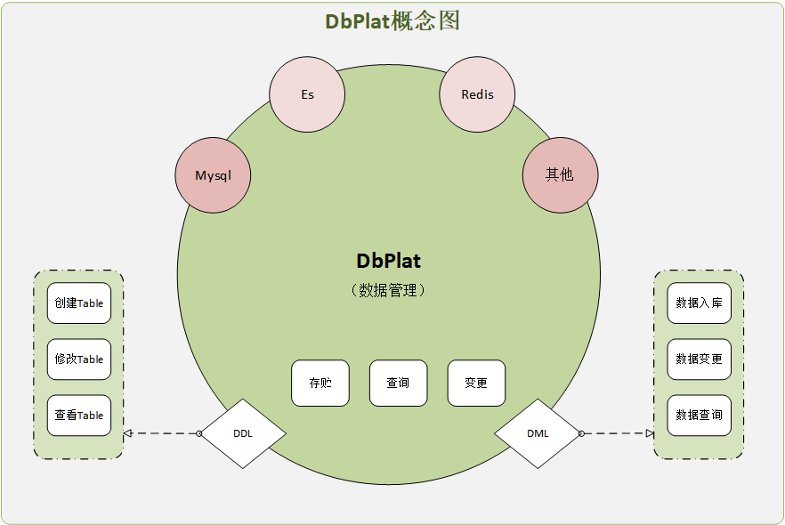
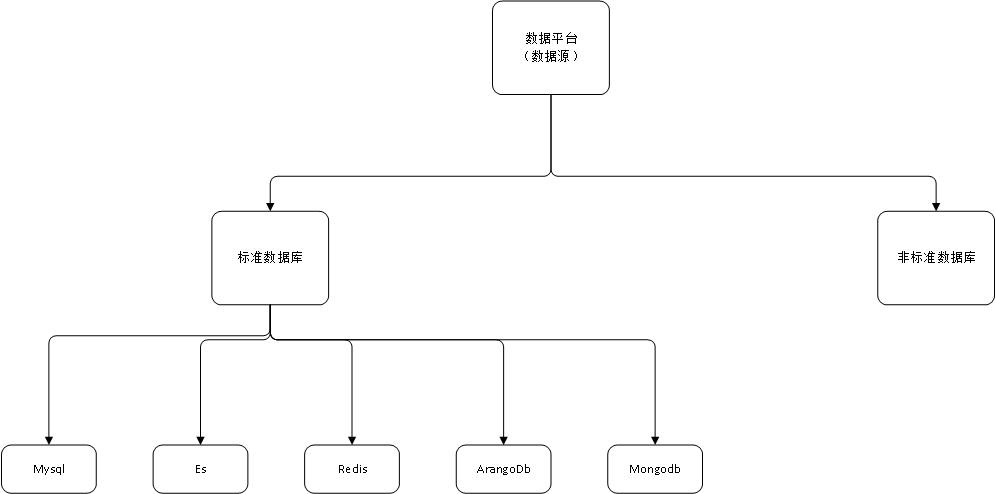

<row class="plat">

    <div class="info">
        <a @click="showInfo()" href="javascript:;"><i class="icon icon-info"></i></a>
    </div>

    <!-- info -->
    <div class="modal fade" id="f-info">
        <div class="modal-dialog modal-lg">
            <div class="modal-content">
                <div class="modal-header">
                    <button type="button" class="close" data-dismiss="modal"><span aria-hidden="true">×</span><span class="sr-only">关闭</span></button>
                    <h4 class="modal-title">功能概览</h4>
                </div>
                <div class="modal-body">
                    <p>
                        <b>DbPlat概念模型图</b>
                    </p>
                    
                    <br><br><br>
                    <p>
                        数据平台：可以获取数据的平台{{/*（除java-method类型的qtask 实列都会对应绑定相应的数据平台）*/}}
                    </p>
                    
                </div>
                <div class="modal-footer">
                    <button type="button" class="btn btn-default" data-dismiss="modal">关闭</button>
                </div>
            </div>
        </div>
    </div>

    <!-- head -->
    <div class="col-md-11">
        <h3 v-text="cfg.title"></h3>
    </div>
    <div class="col-md-1">
        <div class="input-group pull-right" style="padding-top: 10px">
            <span class="input-group-btn">
                <button @click="edit({})" class="btn btn-primary" type="button"> 新增数据平台 </button>
            </span>
        </div>
    </div>

    <div class="col-md-12">
        <table class="table table-bordered table-hover" style="width: 100%">
            <thead>
            <tr>
                <th v-for="field in cfg.cols" v-text="field.label"></th>
                <th>操作</th>
            </tr>
            </thead>
            <tbody>
            <tr v-for="item in list.rows">
                <td v-for="field in cfg.cols"
                    :title="field.title ? field.title(item[field.col]) : ''"
                    v-html="field.fmt ? field.fmt(item[field.col]) : item[field.col]">
                </td>
                <td>
                    <a @click="edit(item)" href="javascript:;">编辑</a><!-- |
                    <a @click="update({status:1}, item)" v-show="item.status != 1" href="javascript:;">启用</a>
                    <a @click="update({status:0}, item)" v-show="item.status == 1" href="javascript:;">不启用</a> |
                    <a @click="update({status:-1}, item)" href="javascript:;">删除</a> -->
                </td>
            </tr>
            </tbody>
        </table>
    </div>


    <!-- edit.modal -->
    <div class="modal fade" id="myModal">
        <div class="modal-dialog">
            <div class="modal-content">
                <div class="modal-header">
                    <button type="button" class="close" data-dismiss="modal"><span aria-hidden="true">×</span><span class="sr-only">关闭</span></button>
                    <h4 class="modal-title">数据中心 - [编辑]</h4>
                </div>
                <div class="modal-body">
                    <form class="form-horizontal">
                        <div class="form-group">
                            <label for="queryId" class="col-sm-2 required">平台名称</label>
                            <div class="col-md-6 col-sm-10">
                                <input v-model="row.name" class="form-control" id="queryId" placeholder="请输入 平台名称">
                            </div>
                        </div>
                        <div class="form-group">
                            <label for="queryId" class="col-sm-2 required">平台类型</label>
                            <div class="col-md-2 col-sm-10">
                                <select class="form-control" v-model="row.cate">
                                    <option value="mysql">MySql</option>
                                    <option value="es">ES</option>
                                    <option value="http">Http</option>
                                    <option value="localApi">平台本地API</option>
                                </select>
                            </div>
                        </div>

                        <div class="form-group">
                            <label for="url" class="col-sm-2 required">连接URL</label>
                            <div class="col-md-6">
                                <input v-model="row.url" class="form-control" id="url" placeholder="请输入 连接URL">
                            </div>
                        </div>
                        <div class="form-group">
                            <label for="user" class="col-sm-2 required">连接账号</label>
                            <div class="col-md-2">
                                <input v-model="row.user" class="form-control" id="user" placeholder="用户">
                            </div>
                            <div class="col-md-2">
                                <input v-model="row.pwd" class="form-control" id="pwd" placeholder="连接密码">
                            </div>
                            <div class="col-md-2">
                                <a @click="loadCatalogs" class="btn" href="javascript:;">获取catalogs</a>
                            </div>
                        </div>
                        <div class="form-group">
                            <label class="col-sm-2">Catalogs</label>
                            <div class="col-md-6">
                                <label v-for="item in catalogs" class="checkbox-inline">
                                    <input type="checkbox" v-model="row.catalogs" :value="item"> <span v-text="item"></span>
                                </label>
                            </div>
                        </div>

                        <div class="form-group">
                            <label for="remark" class="col-sm-2">备注</label>
                            <div class="col-md-6 col-sm-10">
                                <input v-model="row.remark" class="form-control" id="remark" placeholder="请输入 备注">
                            </div>
                        </div>
                    </form>
                </div>
                <div class="modal-footer">
                    <button type="button" class="btn btn-default" data-dismiss="modal">取消</button>
                    <button @click="save(row)" type="button" class="btn btn-primary">确定</button>
                </div>
            </div>
        </div>
    </div>
</row>

<script>
    let {showOk} = red
    let {dbList, dbSave} = plat
    let {catalogList} = db

    var vm = new Vue({
        el: ".plat",
        data: {
            cfg: {
                title: "数据中心 管理",
                cols: [
                    {col: "name", label: "数据平台名称"},
                    {col: "url", label: "数据平台连接地址"},
                    {col: "user", label: "用户"},
                    {col: "remark", label: "备注"},
                    {col: "pulse", label: "状态", fmt: function (v) {
                            if (!v) return "";

                            if (v.status == 0) {
                                return '<span class="label label-success">连接正常</span>';
                            }

                            if (v.status == -1) {
                                return '<span class="label label-danger">连接失败';
                            }
                        },title: function (v) {
                            if (!v) return "";

                            if (v.status == 0 && v.time) {
                                return "最后检测时间：" + red.timeFmt(new Date(v.time), "HH:mm:ss");
                            }

                            if (v.status == -1  && v.time) {
                                return "最后检测时间：" + red.timeFmt(new Date(v.time), "HH:mm:ss");
                            }

                            return "";
                        }},
                    {col: "status", label: "是否启用", fmt: function (v) {
                           return {"0":"未启用", "1":"启用", "-1":"删除"}[v] || "";
                        }},

                ],
                filters: []
            },
            list: {rows:[], total: 0},
            row: {},
            catalogs: ["a", "b", "c"]
        },
        watch: {

        },
        methods: {
            findList() {
                dbList().then(res => vm.list = res)
            },
            /*update: function (kv, row) {
                red.post('/meta/save', {
                    _id: row._id,
                    doc: JSON.stringify(kv)
                }, function (json) {
                    red.showMsg();
                    red.putAll(row, kv);
                    vm.findList();
                });
            },*/
            edit: function (row) {
                this.row = row
                this.loadCatalogs()
                row['catalogs'] = row['catalogs'] || []
                $('#myModal').modal({moveable: true})
            },
            save: function (row) {
                dbSave({plat: row}).then(() => {
                    red.showOk()
                    $('#myModal').modal('hide')
                    this.findList()
                })
            },
            loadCatalogs: function () {
                vm.catalogs = [];
                //let [cate, url, user, pwd] = this.row
                let dbAccount = {cate:'', url:'', user:'', pwd:''}
                for (let key in dbAccount) {
                    dbAccount[key] = this.row[key]
                }
                catalogList({dbAccount}).then(res => {
                    this.catalogs = res;
                })
            },
            dbPulse: function (row) {
                /*row["check"] = true;
                $.getJSON("/_db/pulse", {
                    dbPlatId: row._id
                }, function (json) {
                    row["pulse"] = json.body;
                    row["check"] = false;
                });*/
            },
            showInfo() {
                $('#f-info').modal({moveable: true})
            }
        },
        mounted: function () {
            this.findList();

            function pulse() {
                vm.list.rows.forEach(function (row) {
                    if (row.status == 1 && !row["check"]) {
                        vm.dbPulse(row);
                    }
                });
            }
            //心跳检查
            setTimeout(function () {
                pulse();
            }, 500);
            setInterval(function () {
                pulse();
            }, 30000)
        }
    });
</script>